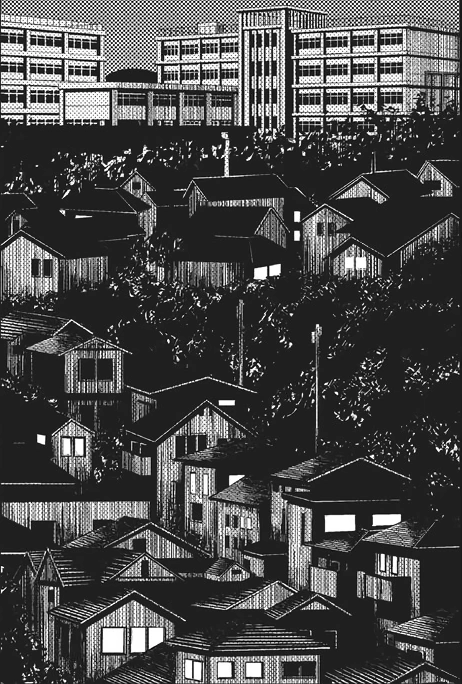

Cidade de Sendai

Introdução |
Localização |
Multimédia |
Informações |
Home
Sendai (仙台市) é a capital da prefeitura de Miyagi, no Japão.
⏰
🍙
🕺
🏥
🕟
🕺
🗻
🍜
🕥
🚄
🌆
🕺
🍻
🎉
🌇
🕺
🛌
💤
🗾
Dia a Dia
- Na pagina Introdução econtramos breve Introdução de Sendai.
- Na pagina Localização econtramos breve descrição do Japão e o mapa de Sendai.
- Na pagina da Multimédia estão algumas imagens de Sendai, um video do youtube.
- Na pagina de Informações encontram-se informações sobre a demografia, a geografia e o Website de Osaka.
- Na Home é onde pode aceder a todos os labs.